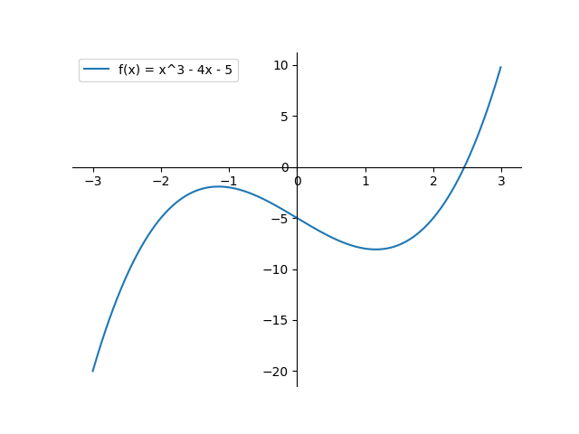

For last several weeks I've been exploring SYCL DPC++, which is an open standard for accelerated computing, targetting CPUs, GPUs, FPGAs etc. I find it easier to work with than Vulkan Compute, due to Vulkan requiring me to specify almost every single fine grained details regarding how to perform accelerated computation on GPGPU. Here using SYCL DPC++, I enjoy quite a great level of flexibility in detailing, letting me specify details only when required. This week I decided to implement root finding algorithm using SYCL DPC++, where I try to approximate root of single variable non-linear equation like 👇
I choose to go with standard way of doing it --- Bisection Method. First I implement sequential form, then I implement SIMD parallel model of it using SYCL DPC++. I choose to work with f(x) = x ** 3 - 4 * x - 5 throughout this document. I begin by plotting aforementioned equation.

Assume a, b are two values for which f(x) has opposite signs.
So f(a) * f(b) < 0. Input z for which f(x)
produces 0, must be living in (a, b) interval. For finding where exactly z lies
( read with better precision ), I split (a, b) interval in half & try to evaluate f(x) at m = (a + b) / 2.
If it turns out that f(a) & f(m) has opposite signs ( read f(a) * f(m) < 0),
clearly z lies in interval (a, m). If not, then z must be in interval (m, b).
I keep following same logic flow in updated interval, until I discover some (a, b) which has acceptable
level of difference ( read |b - a| ). Let me also define, I'm open to accept |b-a| < 10-5.
As soon as bisection method reaches this level of approximation, I terminate algorithm.
Bisection method simply says 👇
I want to step through this algorithm, where I input a = -3, b = 3 & c = 10-5. I evaluate f(x) at a, b obtaining 👇, which clearly says root must be in (-3, 3) interval.
Evaluating f(x) at m = (-3 + 3) / 2 = 0, results in -5. I see f(a) * f(m) < 0
evaluates to false, it's clear z must lie in interval (m, b) = (0, 3). In next iteration
(a, b) = (0, 3) so m = 1.5. Evaluating f(0) * f(1.5) = -5 * -7.625 < 0, results in negative
result, clearly z must be lying in interval (m, b) = (1.5, 3). In next iteration,
a = 1.5, b = 3, m = 2.25, evaluation of f(1.5) * f(2.25) = -7.625 * -2.609375 < 0, hints
root of equation f(x) i.e. z must be lying in inteval (2.25, 3). This way I keep trying
to decrease width of interval until it goes below 10-5.
Looking at above plot of f(x), I discover bisection method is progressing towards correct direction.
Because plot says somewhere between (2, 3) root lies & I just found myself it must be somewhere between (2.25, 3).
If I keep exploring for few more iterations I belive it must lead me to better approximated result.
Instead of manually doing, I collect runlog of bisection method implementation.
In final iteration it says root must lie in (2.4566689, 2.4566803). As evaluation of f(a) * f(m) < 0
turns out to be negative, clearly solution must be in interval (m, b), where m = (2.4566689 + 2.4566803) / 2 = 2.4566746.
Before moving to next iteration, I notice |b-a| has reached below 10-5, which denotes
I must terminate algorithm now.
Approximated root of f(x) = 2.4566746, with error 10-5.